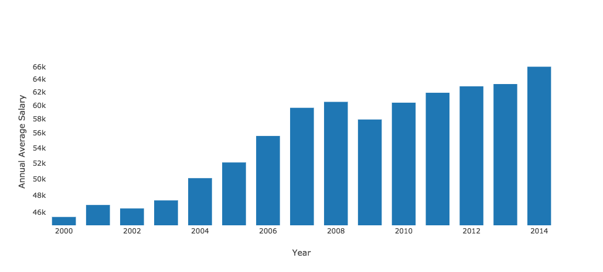

Project Overview
In this project I came up with the idea to show the statistics of unemployment and employments effect during these
modern years in New York State. I want to show this so that people in New York State or other people out of the state
would determine if they would want to live in any of the New York State district depending on the availability.
Employment V.S unemployment could help those people see if New York State labor is in a better role each year.
The Datasets
I worked with two datasets that I got from the New York State Data. One of
these datasets shows the statistical data of employment between the years of 2000 to 2014. In this dataset it gives
all of average employments, total wages, and average salaries depending on the job titles and counties in New York
State. The second Dataset shows statistical information of unemployment rate in different counties of all New York
State between the years of 1976 to 2016. These sets give statistics of what is ocurring with New York State unemployments
and employments and help predict what is happening to New York State Labor.
Data Visualization & Techniques
The data brings out interesting statistics where it helps predict what would happen with unemployment in the next
year. We people should be able to see the stability of our economy by knowing what is happening with unemployment.
Unemployment and employment is a big factor in the economy and this data helps us understand and realize what is
happening throughout these years. For the project I used bokeh to come up with most of the graphs I created for this
project as well as plotly. Some techniques I came up with was to draw a map of New York State with its district
boundaries where depending on each of the boundaries there is an unemployment rate that relates to the change of color
in each of its districts. Another technique was to manipulate the data of employment to show the bokeh graphs that I
came up with so that it gives the most recent years of employment statistics and how each year is being reflected
towards the next.

The average salary change each years of all job titles in New York State.
The Counties that have more darker color have higher unemployment rate and lighter color if is lower unemployment rate.
Project Created By
Antonio Peralta at the City University of New York Lehman College